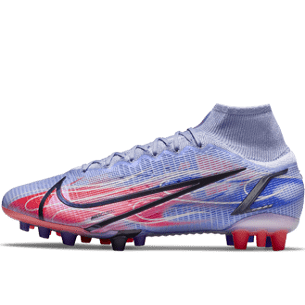

<ion-header>
  <ion-toolbar>
    <div id="filtro">
      <ion-buttons
        ><ion-back-button defaultHref="/tabs/futbol"></ion-back-button
      ></ion-buttons>
      
      <ion-buttons slot="end"
        ><ion-button routerLink="/tabs/user" routerDirection="forward"
          ><ion-icon
            size="large"
            name="person-circle-outline"
          ></ion-icon></ion-button
      ></ion-buttons>
    </div>
  </ion-toolbar>
</ion-header>

<ion-content>
  <div id="contenedorImagen">
    <ion-slides pager="true">
      <ion-slide>
        
      </ion-slide>
      <ion-slide>
        
      </ion-slide>
      <ion-slide>
        
      </ion-slide>
      <ion-slide>
        
      </ion-slide>
    </ion-slides>
    <div class="descripcion">
      <p>Nike Mercurial Superfly 8 Pro KM FG</p>
      <p class="subdescripcion">Botas de fútbol para terreno firme</p>
      <s class="subdescripcion">PVP 199,50€</s>
      <p><b>159,99€</b></p>
      <p id="estrellas">
        <ion-icon color="warning" name="star"></ion-icon>
        <ion-icon color="warning" name="star"></ion-icon>
        <ion-icon color="warning" name="star"></ion-icon>
        <ion-icon color="warning" name="star"></ion-icon>
        <ion-icon color="warning" name="star"></ion-icon>
        <span class="subdescripcion"> 10 opiniones</span> 
      </p>
      <ion-item>
        <ion-label>Tallas</ion-label>
        <ion-select interface="action-sheet" cancelText="Cancelar">
          <ion-select-option value="38">38</ion-select-option>
          <ion-select-option value="39">39</ion-select-option>
          <ion-select-option value="40">40</ion-select-option>
          <ion-select-option value="41">41</ion-select-option>
          <ion-select-option value="41.5">41 1/2</ion-select-option>
          <ion-select-option value="42">42</ion-select-option>
          <ion-select-option value="42.5">42 1/2</ion-select-option>
          <ion-select-option value="43">43</ion-select-option>
          <ion-select-option value="43.5">43 1/2</ion-select-option>
        </ion-select>
      </ion-item>
      <ion-button color="danger"
        ><ion-icon name="bag-add-outline"></ion-icon>Añadir al
        carrito</ion-button
      >
      <div id="botones-seguidos">
        <ion-button color="light"
          ><ion-icon name="heart"></ion-icon>Añadir afavoritos</ion-button
        >
        <ion-button color="light"
          ><ion-icon name="share-social"></ion-icon
        ></ion-button>
      </div>
    </div>
  </div>
</ion-content>
